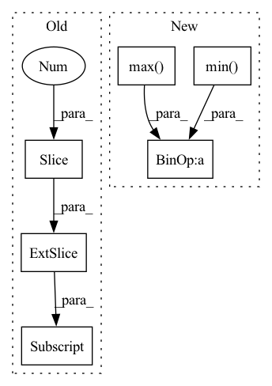

Pattern ID :21372

Before Change
area2 = box_area(box2.T)
// inter(N,M) = (rb(N,M,2) - lt(N,M,2)).clamp(0).prod(2)
inter = (torch.min(box1[:, None, 2:], box2[:, 2:]) - torch.max(box1[:, None, :2], box2[:, :2])).clamp(0).prod(2)
return inter / (area1[:, None] + area2 - inter) // iou = inter / (area1 + area2 - inter)
After Change
// inter(N,M) = (rb(N,M,2) - lt(N,M,2)).clamp(0).prod(2)
(a1, a2), (b1, b2) = box1[:, None].chunk(2, 2), box2.chunk(2, 1)
inter = (torch.min(a2, b2) - torch.max(a1, b1)).clamp(0).prod(2)
// IoU = inter / (area1 + area2 - inter)
return inter / (box_area(box1.T)[:, None] + box_area(box2.T) - inter)
In pattern: SUPERPATTERN
Frequency: 3
Non-data size: 6
Instances
Fragment ID: 68194432
Project Name: fcakyon/yolov5-pip
Commit Name: b9766c8f073d85d75c9b71b4ce6dc3e00f7e9184
Time: 2022-04-28
Author: 34196005+fcakyon@users.noreply.github.com
File Name: yolov5/utils/metrics.py
M Class Name: AnonimousClass
N Class Name: AnonimousClass
M Method Name: box_iou(2)
N Method Name: box_iou(2)
M Parent Class:
N Parent Class:
M File Name: yolov5/utils/metrics.py
N File Name: yolov5/utils/metrics.py
M Start Line: 267
M End Line: 272
N Start Line: 269
N End Line: 273
'>
Before Change
area2 = box_area(box2.T)
// inter(N,M) = (rb(N,M,2) - lt(N,M,2)).clamp(0).prod(2)
inter = (torch.min(box1[:, None, 2:], box2[:, 2:]) - torch.max(box1[:, None, :2], box2[:, :2])).clamp(0).prod(2)
return inter / (area1[:, None] + area2 - inter) // iou = inter / (area1 + area2 - inter)
After Change
// inter(N,M) = (rb(N,M,2) - lt(N,M,2)).clamp(0).prod(2)
(a1, a2), (b1, b2) = box1[:, None].chunk(2, 2), box2.chunk(2, 1)
inter = (torch.min(a2, b2) - torch.max(a1, b1)).clamp(0).prod(2)
// IoU = inter / (area1 + area2 - inter)
return inter / (box_area(box1.T)[:, None] + box_area(box2.T) - inter)
'>
Fragment ID: 68194434
Project Name: ultralytics/yolov5
Commit Name: 406ee528f0fb78e6f814b9a53765bc54183f0a0b
Time: 2022-04-10
Author: glenn.jocher@ultralytics.com
File Name: utils/metrics.py
M Class Name: AnonimousClass
N Class Name: AnonimousClass
M Method Name: box_iou(2)
N Method Name: box_iou(2)
M Parent Class:
N Parent Class:
M File Name: utils/metrics.py
N File Name: utils/metrics.py
M Start Line: 268
M End Line: 273
N Start Line: 269
N End Line: 273
'>
Before Change
vmax = np.percentile(disp_resized_np, 95)
normalizer = mpl.colors.Normalize(vmin=disp_resized_np.min(), vmax=vmax)
mapper = cm.ScalarMappable(norm=normalizer, cmap="magma")
colormapped_im = (mapper.to_rgba(disp_resized_np)[:, :, :3] * 255).astype(np.uint8)
return colormapped_im
def channelData(layer)://convert gimp image to numpy
After Change
// Saving colormapped depth image
disp_resized_np = disp_resized.squeeze().cpu().numpy()
vmax = np.percentile(disp_resized_np, 95)
vmin = disp_resized_np.min()
disp_resized_np = vmin + (disp_resized_np - vmin) * (vmax - vmin) / (disp_resized_np.max() - vmin)
disp_resized_np = (255 * (disp_resized_np - vmin) / (vmax - vmin)).astype(np.uint8)
colormapped_im = cv2.applyColorMap(disp_resized_np, cv2.COLORMAP_HOT)
colormapped_im = cv2.cvtColor(colormapped_im, cv2.COLOR_BGR2RGB)
// normalizer = mpl.colors.Normalize(vmin=disp_resized_np.min(), vmax=vmax)
'>
Fragment ID: 68194424
Project Name: kritiksoman/gimp-ml
Commit Name: 07de86337c7e38c57c56de4a17c17a290dc63579
Time: 2020-05-09
Author: 33869270+kritiksoman@users.noreply.github.com
File Name: gimp-plugins/monodepth.py
M Class Name: AnonimousClass
N Class Name: AnonimousClass
M Method Name: getMonoDepth(1)
N Method Name: getMonoDepth(1)
M Parent Class:
N Parent Class:
M File Name: gimp-plugins/monodepth.py
N File Name: gimp-plugins/monodepth.py
M Start Line: 65
M End Line: 69
N Start Line: 66
N End Line: 72